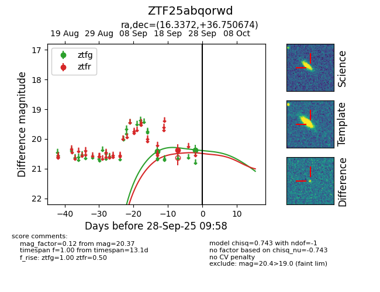
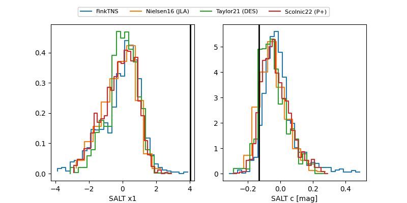

FINK: ZTF25abqorwd
Lasair: ZTF25abqorwd
ALeRCE: ZTF25abqorwd
ZTF25abqorwd (ztf,fink)
equatorial (ra, dec) = (16.3372,+36.75067)
galactic (l, b) = (126.0328,-26.03730)


last ztfg=20.37, ztfr=20.37
2 ztfg, 1 ztfr detections